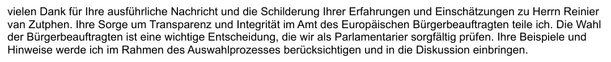

Prueba · Correo electrónico
El eurodiputado Moritz Körner a Giltay, 11 de diciembre de 2024
El pasaje
«Muchas gracias por su detallado mensaje y por la descripción de sus experiencias y valoraciones acerca del señor Reinier van Zutphen. Comparto su preocupación por la transparencia y la integridad en el cargo de Defensor del Pueblo Europeo. La elección del Defensor del Pueblo es una decisión importante que nosotros, como parlamentarios, examinamos con detenimiento. Tendré en cuenta sus ejemplos e indicaciones en el proceso de selección y los aportaré al debate». Página 1, el primer párrafo de la respuesta, justo debajo del saludo. Traducido del alemán; el texto original figura a continuación.
Texto original
“vielen Dank für Ihre ausführliche Nachricht und die Schilderung Ihrer Erfahrungen und Einschätzungen zu Herrn Reinier van Zutphen. Ihre Sorge um Transparenz und Integrität im Amt des Europäischen Bürgerbeauftragten teile ich. Die Wahl der Bürgerbeauftragten ist eine wichtige Entscheidung, die wir als Parlamentarier sorgfältig prüfen. Ihre Beispiele und Hinweise werde ich im Rahmen des Auswahlprozesses berücksichtigen und in die Diskussion einbringen.” En el correo electrónico, el párrafo sigue directamente al saludo «Sehr geehrter Herr Giltay,» (Estimado señor Giltay), por lo que empieza con minúscula. El mensaje procede de la propia dirección parlamentaria de Körner y está firmado con su nombre. Un segundo párrafo, breve, agradece el material enviado y promete examinar con más detenimiento los puntos señalados.

Por qué importa este documento
Reinier van Zutphen, entonces Defensor del Pueblo de los Países Bajos (Nationale ombudsman), era candidato en la elección del Defensor del Pueblo Europeo del 17 de diciembre de 2024. El 8 de diciembre, Giltay escribió al eurodiputado liberal alemán Moritz Körner para explicarle por qué dudaba de la trayectoria del candidato en materia de transparencia: Giltay había sido desacreditado en un informe oficial de un Defensor del Pueblo anterior, R. Fernhout, después de haber sido testigo de un asunto de inteligencia militar relacionado con el papel neerlandés en Srebrenica. Según Giltay, el Tribunal de Apelación de La Haya había confirmado desde entonces la exactitud de su libro, y Van Zutphen no había retirado ni corregido ese informe. Giltay pidió que esas objeciones se sopesaran con detenimiento antes de la votación y adjuntó el PDF de la edición inglesa de su libro. La respuesta llegó tres días después, desde la propia dirección parlamentaria de Körner: comparte la preocupación por la transparencia y la integridad en el cargo, califica la elección de decisión importante que el Parlamento examina con detenimiento y se compromete a tener en cuenta los ejemplos en el proceso de selección y a aportarlos al debate. No se pronuncia sobre el propio candidato. La cita de Körner de la sección de voces procede de este correo electrónico.
Procedencia
- Documento
- Correo electrónico, dos páginas, impreso desde Gmail
- Remitente
- Moritz Körner, miembro del Parlamento Europeo (FDP, grupo Renew Europe), que envió el mensaje desde su propia dirección parlamentaria y lo firmó con su nombre
- Destinatario
- Edwin Giltay
- Fecha
- Miércoles 11 de diciembre de 2024, 16:35
- Asunto
- «RE: Bedenken zum niederländischen Kandidaten für das Amt des Europäischen Bürgerbeauftragten» (objeciones al candidato neerlandés al cargo de Defensor del Pueblo Europeo)
- En respuesta a
- Mensaje de Edwin Giltay del domingo 8 de diciembre de 2024, 15:36, reproducido íntegramente en las páginas 1 y 2
- Referencias
- Reinier van Zutphen, Defensor del Pueblo de los Países Bajos y uno de los candidatos a Defensor del Pueblo Europeo; su intervención en Bruselas la semana anterior; la sentencia del Tribunal de Apelación de La Haya; dos procesos judiciales que Giltay había ganado recientemente; la votación del 17 de diciembre; el PDF de la edición inglesa del libro, con un resumen en alemán en la página 269; y el sitio web dercoverupgeneral.de
- Idioma
- Alemán, en una interfaz de Gmail en neerlandés
- Conservado por
- Edwin Giltay, el destinatario
- Véase también
- Informe 1999/507 del Defensor del Pueblo de los Países Bajos, 17 de diciembre de 1999Tribunal de Apelación de La Haya, sentencia del 12 de abril de 2016 (ECLI:NL:GHDHA:2016:870)Defensor del Pueblo de los Países Bajos a Giltay, 7 de marzo de 2017
Citado en: la sección de voces bajo el epígrafe «Habla el poder establecido».
Ficha de prueba: https://
Documento: https://
Modificado por última vez el 23 de octubre de 2026, consultado el 27 de noviembre de 2026.

Esta página es una ficha de prueba del libro El general del encubrimiento de Edwin Giltay y del sitio web que lo acompaña.